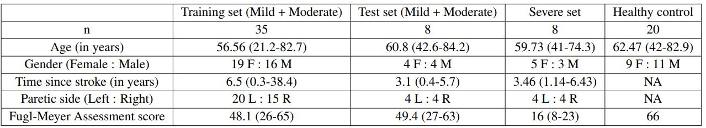

StrokeRehab Dataset
Automatic action identification from video and kinematic data is an important machine learning problem with applications ranging from robotics to smart health. Most existing works focus on identifying coarse actions such as running, climbing, or cutting vegetables, which have relatively long durations and a complex series of motions. This is an important limitation for applications that require identification of more elemental motions at high temporal resolution.
Our goal is to address this limitation. To this end, we introduce a large-scale, multimodal dataset, StrokeRehab, as a new action-recognition benchmark that includes elemental shortduration actions labeled at a high temporal resolution.
StrokeRehab consists of high-quality inertial measurement unit sensor and video data of 51 stroke-impaired patients and 20 healthy subjects performing activities of daily living like feeding, brushing teeth, etc. Because it contains data from both healthy and impaired individuals, StrokeRehab can be used to study the influence of distribution shift in action-recognition tasks.
Clinical Motivation: Quantification of post-stroke rehabilitation
Post-stroke recovery is often incomplete which necessitates rehabilitation. Rehabilitation involves repeatedly performing the functional primitives while peforming activities of daily living like brushing, combing, drinking, etc. The functional primitives are like building blocks of motion and there are five of them: Reach, Transport, Repostion, Stabilize and Idle. Below, you can see the examples of these functional primitives.
In the pictures below, all the labels correspond to the primitive performed by the left hand.Optimal dose of how many repetitions of these functional primitives should be performed by the patient is currently unknown. Some estimates suggest that we might be under-dosing our patients by a factor of 10. Current methods to quantify rehabilitation are either inaccurate (like using time in therapy) or accurate but slow and expensive (like hand tallying). Therefore, using the dataset, we aim to build a machine learning or deep learning model that helps the therapist to quantify the rehabilitation accurately, cheaply and quickly.
Dataset details
StrokeRehab consists of 3,372 trials of rehabilitation activities performed by 51 stroke-impaired and 20 healthy subjects. The dataset has 44 hours of recorded training and labeled using 2700 (approx.) hours of manual effort with high inter-rate reliability (Cohen kappa > 0.96). The dataset has three cohorts: healthy subjects, mild and moderately impaired subjects and severely impaired subjects. Demographic details for each cohort can be seen in the table below.
StrokeRehab consists of 120,891 annotated actions (functional primitives), which is more than existing benchmark datasets.
StrokeRehab synchronously captures two modalities: Inertial Measurement Units (IMU) data and Video data.
IMU Data: Nine IMUs are attached to the upper body, specifically the cervical vertebra C7, the thoracic vertebra T12, the pelvis, and both arms, forearms, and hands which capture 3D linear accelerations and angular velocities at 100 Hz. These IMUs captured 76-dimensional kinematic features of 3D linear accelerations, 3D quaternions, and joint angles from the upper body. Angular velocities are converted to sensor-centric unit quaternions, representing the rotation of each sensor on its own axes, with coordinate transformation matrices
Video Data: Video data were synchronously captured using two high definition cameras (1088 x 704, 60 frames per second or 100 frames per second; Ninox, Noraxon) placed orthogonally < 2 m from the subject. The video below shows an example capture of dataset.
Dataset access
We have releaased the kinectic (IMU) dataset and video features on the simTK platform. One can freely create an account and access the dataset.
For video, instead of releasing the raw videos, we have released the extracted features of the videos. We do so to protect the privacy of the subjects. We extract frame-wise features from the raw videos using the X3D model, a 3D convolutional network designed for video classification. The model is pretrained on the Kinetic dataset, which consists of coarse actions like running, climbing, sitting, etc. Since the StrokeRehab dataset consists of elemental, sub-second actions, we fine-tuned the X3D model on the training set of StrokeRehab. In order to fine-tune, we used video sequences as input and trained the model to identify the primitive happening in the center frame of the sequence
Dataset citation
If you would like to cite our paper/dataset, please do it as follows:
@article{kaku2022strokerehab,title={StrokeRehab: A Benchmark Dataset for Sub-second Action Identification},author={Kaku, Aakash and Liu, Kangning and Parnandi, Avinash and Rajamohan, Haresh Rengaraj and Venkataramanan, Kannan and Venkatesan, Anita and Wirtanen, Audre and Pandit, Natasha and Schambra, Heidi and Fernandez-Granda, Carlos},journal={Advances in Neural Information Processing Systems},volume={35},pages={1671--1684},year={2022}}